CS184/284A Spring 2025 Homework 3 Write-Up
Link to webpage: cal-cs184-student.github.io/hw-webpages-totoro-page/hw3
Link to GitHub repository: github.com/cal-cs184-student/sp25-hw3-totoro-3

Overview
In this homework, we explored the rendering pipeline by implementing ray generation and basic intersection, building a bounding volume hierarchy (BVH) for acceleration, and implementing direct and global illumination techniques. The goal was to create a complete path tracer that simulates the behavior of light in a scene. As we progressed through the parts, we learned how to effectively trace rays through a scene, optimize the rendering process using BVH, and simulate realistic lighting effects. The final result is a path tracer that can render complex scenes with realistic lighting and shading effects with improved efficiency and quality through acceleration techniques and adaptive sampling. This was definitely the most intense homework so far, and it involved a lot of debugging and testing and rendering the same image 100 times to get the correct final result. Overall, we learned a lot about the rendering pipeline and it gave us a deeper appreciation and understanding of the complexities (and time!) involved in rendering realistic images.The first part of the homework was transforming normalized image coordinates into world space rays and implementing the Moller-Trumbore algorithm for ray-triangle intersection as well as solving the quadratic for ray-spere intersection. We learned about why it's important to use an epsilon value to account for numerical flaoting point precision issues when checking for intersections. This was a pretty good warmup to the homework, but then part 2 was where things got a bit more complicated as we had to implement a BVH to accelerate ray tracing by reducing the time complexity of ray intersection complexity. We learned how to recursively the primitives into left and right child nodes until the max leaf size is met in order to construct our tree, and we also learned about the importance of choosing the longest axis for splitting and how to compute the midpoint based on the centroid of the primitives. After building the BVH, we wrote a function to intersect the BVH, which involved a lot of careful calculations to find the minimum and maximum bounds of the bounding boxes and checking for intersection with the ray. This part was more involved, but it was satisfying to see how much faster our rendering times became with BVH acceleration.
The third part of the homework focused on implementing direct illumination. We first implemented a function to evaluate the diffuse BSDF, which involved dividing the reflectance by \(\pi\). We then implemented direct lighting with uniform sampling, which involved sampling rays uniformly over a small hemisphere around the intersection point and checking for intersections with light sources. We then progressed to implement importance sampling to sample the lights directly rather than casting uniform directions and using shadow rays to check for occlusion. We ran into a frustrating bug when some shadows didn't show up, but we realized we weren't normalizing our intermediate radiance results properly. It was interesting to compare uniform sampling to importance sampling and see how importance sampling greatly improved the quality of the rendered images by reducing noise and focusing on the light sources that actually contributed to the illumination without actually having to improve the number of samples.
The fourth part (which took us the most time) was implementing global illumination with indirect lighting. We combined direct illumination with indirect illumination by recursively following paths of light after the first bounce to compute the final radiance across multiple bounces. We implemented a recursive function that sampled the BSDF to determine new bounce directions and used Russian Roulette to probabilistically terminate further computations. This part was challenging as we had to carefully manage the recursion depth and ensure that we were accumulating the correct radiance values at each bounce, and we got stuck on a bug when we were NOT accumulating bounces since we weren't properly returning the last bounce. We rendered the same image too many times to count and camped out office hours to try and figure out, and we had to zoom out and look at the big picture to see how the recursion and accumulation were supposed to work together, and finally we acheived the proper effect! It was cool to see the progression of each light bounce and how it progressively made the rendering more realistic, especially with the bunny scene. We also implemented Russian Roulette to terminate the recursion probabilistically, which helped reduce rendering times while still maintaining quality.
Lastly, we implemented adaptive sampling, which involved dynamically adjusting the number of samples per pixel based on the variance of the pixel colors. This allowed us to focus more computation on areas of the image that had high variance or noise, while reducing the number of samples in areas that were more uniform. We modified our ray tracing function to include adaptive sampling and calculated the illuminance statistics using the mean and standard deviation of the pixel colors. We had to carefully manage the sampling rates and ensure that we were properly accumulating the radiance values, but it was amazing to see how much the noise was reduced. It was also cool to see the heat rate map and see how it matched up with the areas of lots of noise in the non-adaptive sampling rendering. Overall, this homework was really challenging, but we definitely learned a lot about the rendering pipeline and about the different tricks to improve rendering times and quality. It was a great way to solidify our understanding of the concepts we've learned in class and to see how they all come together in a real-world application.
Part 1: Ray Generation and Scene Intersection
Walk through the ray generation and primitive intersection parts of the rendering pipeline.
For ray generation, we are given normalized image coordinates and want to output a ray in the world space. To do this, we first transform the inputs from image space to the camera space by \[(x-0.5)*2 * tan(rad(hFov) / 2.0)\] This allows us to center x around 0 and span between [\(-tan(rad(hFov)/2)\), \(tan(rad(hFov)/2)\)] where the radian conversion is necessary since hFov is given to us in degrees. The same logic applies to y. With these new x, y coordinates in the camera space and z=-1 (since the camera is looking along the negative z axis), we can generate a new ray. We then normalize this ray and transform it from camera space to world space using thec2w transformation matrix that is given to get the direction of our final ray in world space. The origin of this final ray will be c2w*(0,0,0) + pos.
Once we have this ray, we can use it to test for any intersections it has within our scene. We trace the ray, and if an intersection is found we can store the metadata such as the color or surface normal of the point we intersect at which will be useful in downstream processing.
Explain the triangle intersection algorithm you implemented in your own words.
We implemented the Moller-Trumbore algorithm for ray-triangle intersection. First, we grab the edges e1=p2-p1 and e2=p3-p1. Next, we compute the determinant by first taking the cross product of the ray's direction and e2, then taking the dot product between e1 and the cross product. Before we proceed any further, we can check for early termination by checking if our determinant is 0, which would indicate that our ray is parallel to the triangle and has no chance of intersecting. To account for numerical precision issues, we use an epsilon value of 1e-6 to check the value of the determinant. If the derminant is not close to 0, then we proceed to compute the barycentric coordinates u and v. The first one, u, is computed by \((1.0/determinant) * dot(r.o-p1, cross(r.d, e2)\) and the second one, v, is computed with \((1.0/determinant) * dot(r.d, cross((r.o-p1), e1)\). We make sure to check if u or v is within the triangle by checking for its sign since if it is outside of the triangle then it means our ray does not intersect. We can then compute an intersection distance along the ray, t, and if our t is within the ray's range(i.e. r.min_t < t < r.max_t), we then update all intersection information such as updating r.max_t = t, isect object's t, normal (after normalizing to a unit vector), primitive, and bsdf.
Show images with normal shading for a few small .dae files.
|
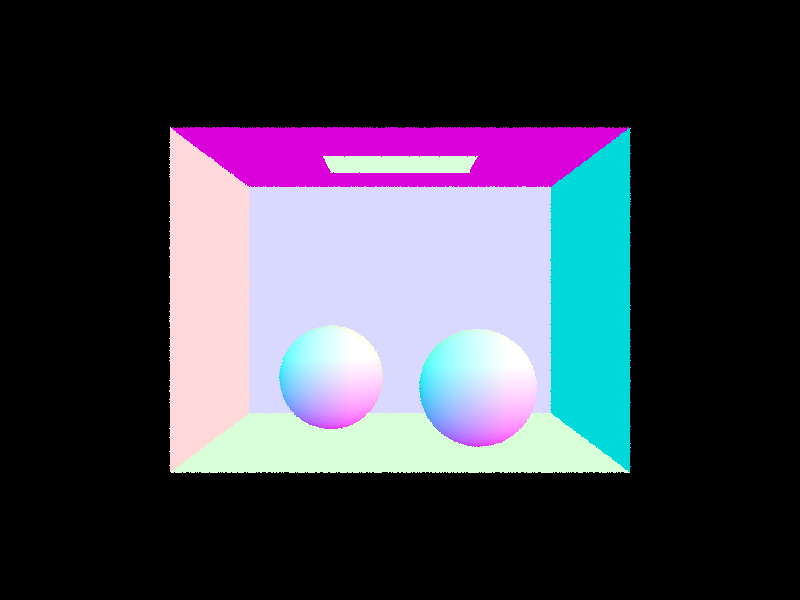
|
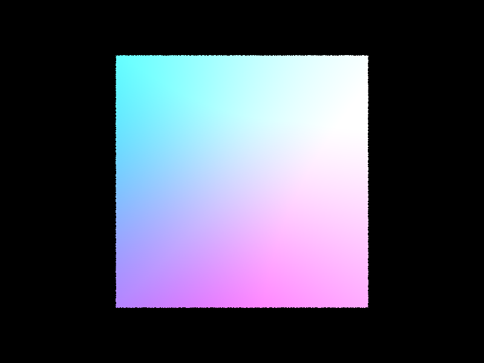
|
|
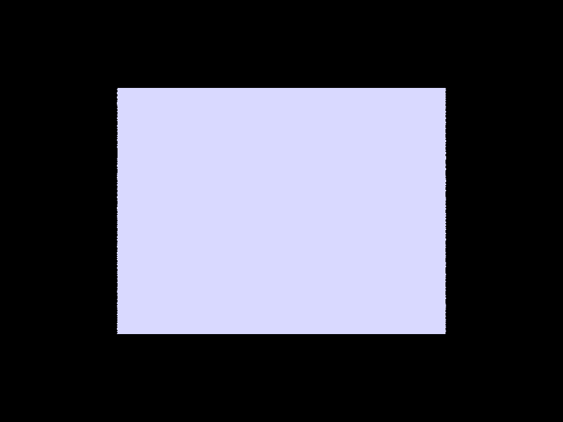
|
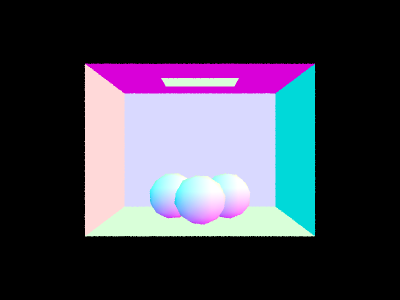
|
Part 2: Bounding Volume Hierarchy
Walk through your BVH construction algorithm. Explain the heuristic you chose for picking the splitting point.
We construct a BVH tree by recursively partitioning the primitives into left and right child nodes until the max leaf size is met. Specifically, we compute the bounding box for all primitives by iterating from start iterator to end iterator. We check for the base case first where if the number of primitives is less than or equal to the max leaf size, then we assign start tonode->start and end to node->end, then return the current node which becomes our leaf node. If our base condition is not met, this is where we need to split recursively. For our splitting heuristic, we find the longest axis since it is efficient to split along the axis that is the longest, and find the midpoint based on the centroid of the primitives. We use this midpoint to split into a left and right primitive array. This is done by using the in place sorting algorithm std::nth_element to sort primitives along the longest axis where n is the median. After this we use the start, mid, and end primitive iterators to recursively call two branches: node->l = construct_bvh(start, mid, max_leaf_size) and node->r = construct_bvh(mid, end, max_leaf_size).
Show images with normal shading for a few large .dae files that you can only render with BVH acceleration.
Compare rendering times on a few scenes with moderately complex geometries with and without BVH acceleration. Present your results in a one-paragraph analysis.
We can see the rendering times drop significantly with our new BVH acceleration. This especially benefits larger meshes as shown from drops in rendering time with different size of meshes. For example, the cow rendering drops from 6.58s to 0.03s and max planck rendering drops from 66.14s to 0.04s, and finally our largest mesh lucy drops from 204.22s to 0.03s. This shows how our BVH acceleration can effectively handle larger meshes.Part 3: Direct Illumination
Walk through both implementations of the direct lighting function (uniform hemisphere & importance sampling)
Starting from uniform hemisphere sampling, we compute the light arriving directly from the light source at a given intersection by sampling rays uniformly over a small hemisphere around this intersection. We first make the coordinate space so that our normal aligns with the local z axis. In order to integrate over all light arriving in a hemisphere around the hit point, we run Monte Carlo sampling as an approximation method. Specifically, we first get a w_in sample using our hemisphereSampler and construct a new ray. This new ray is then used to check if it intersects with a light source, which is done with bvh->intersect function we implemented earlier. If it doesn't intersect, we can ignore this ray but if it does we do Monte Carlo sampling by computing the equation given from lecture (f_r * reflectance * cos_theta_j) / (pdf_uni_hemisphere) where f_r = f_r(p, wj->wr), reflectance is L_i(p, wj), and cos_theta_j = w_in.z since it is the dot product between w_in and the normal, [0,0,1] in local space. We accumulate each result into L_out for num_samples times and divide the accumulated result by num_samples before we return L_out.
Next, for importance sampling we specifically target light sources for more efficient shooting of rays that actually hit our lights, as compared to uniform hemisphere sampling where we were randomly shooting rays. Essentially, each light in the scene is sampled N times according to whether if it's a point light or not. If it is a point light, N = 1, otherwise, N = ns_area_light. We iterate through each light and for each light, we iterate through this N times where we cast a shadow ray to check for occlusion. If the light is not occuluded, we compute the BRDF and use the formula from uniform hemisphere sampling ( L * BRDF * cos_theta) / (pdf) ) to calculate the contribution of this ray in this particular sample. After all N rays are sampled, we make sure to divide the accumulated result by N before we return L_out.
Show some images rendered with both implementations of the direct lighting function (uniform hemisphere & importance sampling)
|
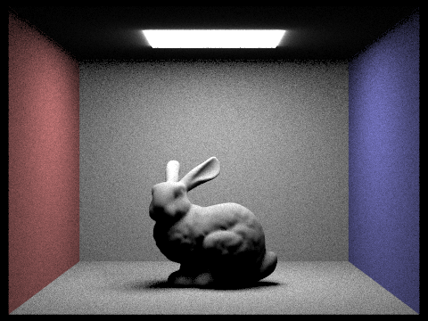
|
|
|
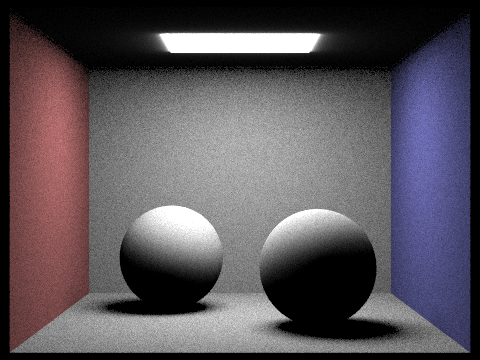
|
|
Focus on one particular scene with 1, 4, 16, and 64 light rays(the -l flag) and with 1 sample per pixel(-s) using light sampling, NOT uniform sampling
|
|
|
|
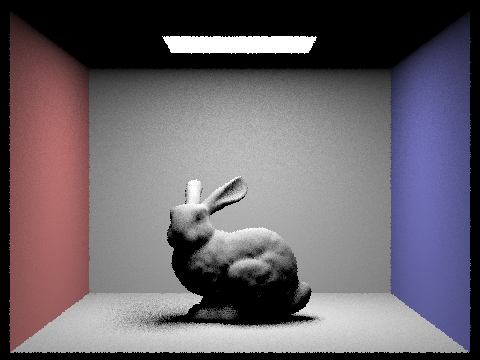
|
|
Compare the results between uniform hemisphere sampling and lighting sampling in a one paragraph analysis.
This importance sampling approach gives us much cleaner and less noiser images while being more efficient when compared to the uniform hemisphere sampling approach. This is because the intuition behind importance sampling lies in finding light sources that actually contribute to the accumulated amount of light that is reached to a given point rather than randomly sampling uniformly across all directions and hoping that it reaches a light source. Essentially, we're targeting the light sources directly and it improves rendering quality without having to increase the number of samples per pixel. We can see this in our bunny scene where the uniform hemisphere sampling approach gives us a lot of noise and artifacts especially on the wall while the importance sampling approach gives us a much cleaner image with less noise and more accurate lighting.
Part 4: Global Illumination
Walk through your implementation of the indirect lighting function.
In this part we combine both direct illumination(one_bounce_radiance) and indirect illumination that recursively follows paths of a light after the first bounce to compute the final radiance across N bounces. We first set up the coordinate system for our local frame and prepare the base L_out as the one_bounce_radiance(r, isect), which is the direct illumination. For the next steps, we set our base case as checking if the current ray depth is 1. If so, then we terminate the function and return L_out. If not, we enter recursion and call sample_f from our isect's BSDF to determine a new bounce direction. When we initialize a new ray that should take into account tranforming from object space to world space, we include an epsilon value to make sure it does not run into self-intersection errors. Before proceeding with further computations, we implement Russian Roulette with a coin flip to probabilistically terminate further computations (\(p = 0.3\) for our implementation). If it does not terminate yet, we check the ray to see if it intersects and it it does we do a recursive call using our new ray and get the contribution of radiance with\[(f * L_i + fabs(w_{in}.z)) / pdf\] where f is the BSDF's sample and L_i is the result of intermittent recursive call using the new ray. If isAccumBounces is set to true, then we accumulate this result to L_out, otherwise we terminate by ONLY returning the contribution of radiance we calculated from the last bounce. The final L_out is then returned if the function did not terminate until here and this includes the total radiance from both direct and indirect lighting.
We also update our est_radiance_global_illumination to make sure we deal with isAccumBounces, since we want to accumulate both zero_bounce_radiance and at_least_one_bounce_radiance if whereas if isAccumBounces is true, and if it's false, we only want to return at_least_one_bounce_radiance if max depth is greater than 1, one_bounce_radiance if it's equal to 1, and zero_bounce_radiance if it's equal to 0. This allows us to return the correct raidance value while accounting for different base cases of depth values.
Show some images rendered with global (direct and indirect) illumination. Use 1024 samples per pixel.
Pick one scene and compare rendered views first with only direct illumination, then only indirect illumination. Use 1024 samples per pixel.
For CBbunny.dae, render the mth bounce of light with max_ray_depth set to 0, 1, 2, 3, 4, and 5 (the -m flag), and isAccumBounces=false. Explain in your write-up what you see for the 2nd and 3rd bounce of light, and how it contributes to the quality of the rendered image compared to rasterization. Use 1024 samples per pixel.
| m=0 | m=1 | m=2 | m=3 | m=4 | m=5 | |
|---|---|---|---|---|---|---|
| No Accumulation | 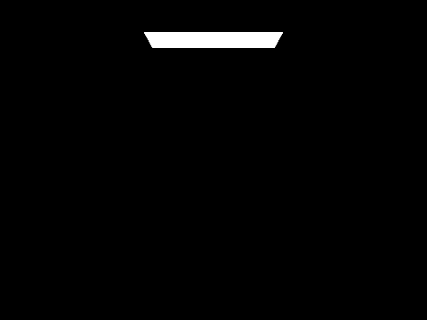 |
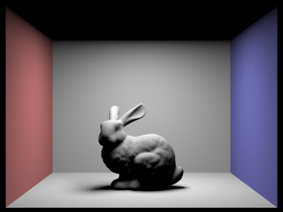 |
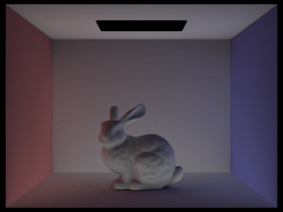 |
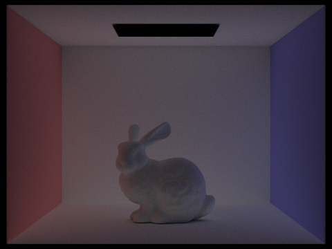 |
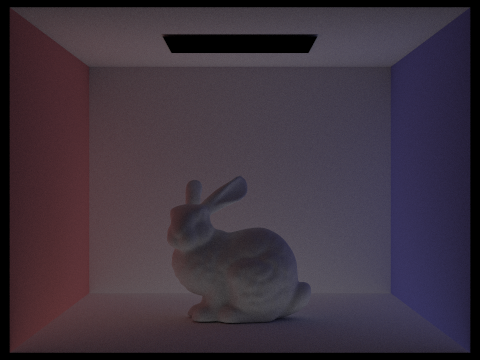 |
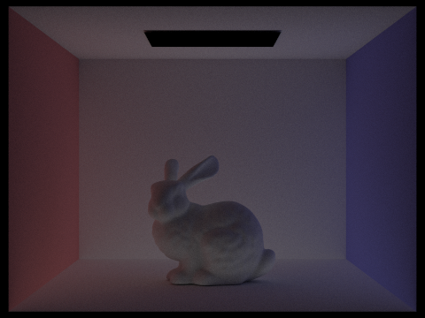 |
| Yes Accumulation |  |
 |
For CBbunny.dae, output the Russian Roulette rendering with max_ray_depth set to 0, 1, 2, 3, 4, and 100(the -m flag). Use 1024 samples per pixel.
| m=0 | m=1 | m=2 | m=3 | m=4 | m=100 | |
|---|---|---|---|---|---|---|
| Russian Roulette |  |
 |
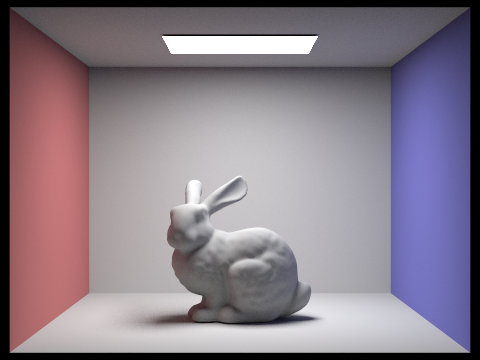 |
Pick one scene and compare rendered views with various sample-per-pixel rates, including at least 1, 2, 4, 8, 16, 64, and 1024. Use 4 light rays.
| s=1 | s=2 | s=4 | s=8 | s=16 | s=64 | s=1024 | |
|---|---|---|---|---|---|---|---|
| Samples per-pixel rates (-l 4) | 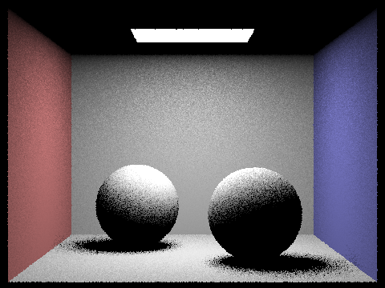 |
Part 5: Adaptive Sampling
Explain adaptive sampling. Walk through your implementation of the adaptive sampling
Adaptive sampling involves increasing the number of samples per pixel in areas of the image that have high variance or noise (which converge slower), while reducing the number of samples in areas that are more uniform (which converge faster). This creates a more efficient rendering process, since it focuses more computation on the parts of the image that need it most (e.g., areas with complex lighting or geometry). We use standard deviation and mean to determine the variance of the pixels in the image, and we define a variable \[I = 1.96 * \frac{\sigma}{\sqrt{n}}\] where \(\sigma\) is the standard deviation of the pixel colors and \(n\) is the number of samples per pixel. If ([I\) exceeds a certain threshold, which we define as \(maxTolerance * \mu\) where maxTolerance = 0.05, then this indicates that the pixel has NOT converged and we continue the tracing-and-detecting loop. Otherwise, if \(I \leq maxTolerance * \mu\), then we can assume that the pixel has converged and we can STOP tracing more rays for that pixel. We choose the number \(1.96\) since we want the average illuminance in this pixel to fall within the \(95%\) confidence interval.
For our implementation, we modified our PathTracer::raytrace_pixel() function to include adaptive sampling. Instead of always setting the num_samples = ns_aa, we want to dynamically determine the samples per pixel and sample in batches instead of checking every single pixel. We initialize num_samples = 0 to act as a counter and also set a pixel_color value equal to (0,0,0) in order to store the average radiance.
To calculate the illuminance statistics, we keep track of 2 equations where s1 represents the sum of the radiance illumination and s2 represents the sum of the squares of the radiance illumination per batch. For each batch, we iterate through the pixels, grab a random sample, generate a random ray, calculate the radiance for the randomly generated ray with global illumination, and then accumulate radiance in our pixel color counter with pixel_color += radiance. After iterating through each batch, we need to check for convergence by calculating the mean, variance, standard deviation using our s1 and s2 variables. We then compute \(I\) and check if it exceeds our threshold. If \(I\) does not exceed the threshold, this indicates that the batch has converged and we can stop sampling. Once we stop sampling, we average pixel color with pixel_color/=num_samples, update the sampleBuffer pixel with our pixel color, and update the sampleCountBUffer with the number of samples we used. This allows us to implement adaptive sampling, which greatly reduces the noise, and we can see how the sampling rate changes in noisy areas in our rate map.
Pick two scenes and render them with at least 2048 samples per pixel.
|
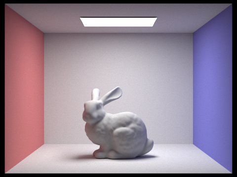
|
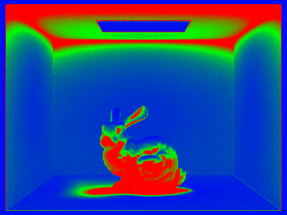
|
|
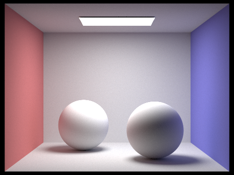
|
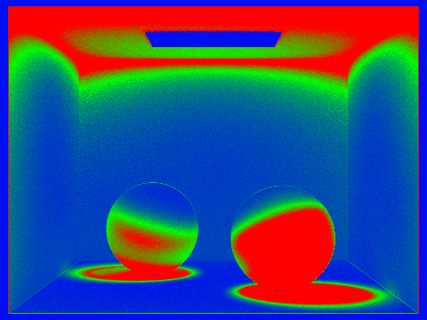
|